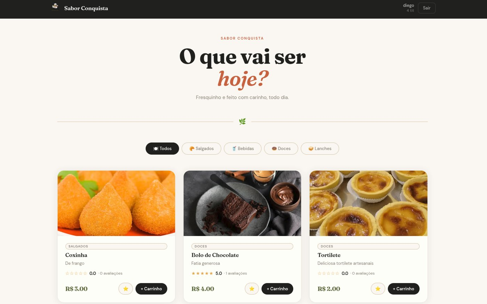

Cardápio digital
Criei este cardápio digital para ajudar a minha turma a vender mais e juntar recursos para a conclusão do curso. Em vez de depender de anotações e conversas avulsas, os produtos ficam reunidos num só lugar, o que deixa as vendas escolares mais simples, rápidas e organizadas para quem vende e para quem compra.
O sistema tem tela de login, front-end e back-end separados, com pagina de admin onde podem ter o controle finaceiro, e já está em produção, sendo usado de verdade pela turma.